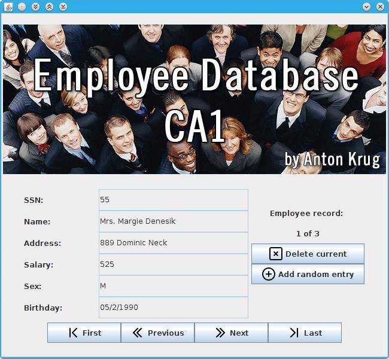
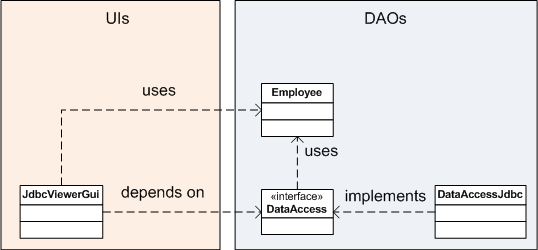

JDBC Employee Database Viewer - CA 1
by Anton Krug 20062210

Features
-
Proper use of Java8
-
Utilization of streams and lambda expressions, to iterate all Components and disable/enable them in one line
Arrays.asList(prevnext.getComponents()).stream().forEach((item)->item.setEnabled(areEnabled)); -
Method referencing and runnables. To handle differently each mouse event action it's possible quickly reference a regular method as a Runnable argument. Removes all the syntax sugar for creating Functions, Runnables or Threads or other workarounds to handle simple actions.
this::actionAddEmployee()This syntax is very trivial and yet very powerful (removes lot of sugar). This allows very simplistic eventListener and lowers cyclomatic complexity (more below).
-
-
Separation of concerns, all the database configuration is removed from code and kept in separate config.properties file.
-
Separation of concerns and Modularity, using Interface to separate the database access implementations from concept. AddEmployee in the UI should be independ of the specific implementation of the database. Or given database access implementation shouldn't dependant on specific GUI. All UIs implementation and DAOs depend on 1 interface and 1 class, Employee which is entity containting the values and the DataAccess interface which is used to describle the interface for the implementations. This allows for the UI have many different DAOs implementations and no need to changed anything in the UI. And it's the same other direction as well, the specific DAO can be used in many different UIs. This allows to have console based UI, or just better JUnit tests. And it allows to swap implementations in runtime if needed:
DataAccess dao = new DataAccessJdbc();Because the dao is DataAccess we don't care with which specific implementation we initialised it at the moment, in the example it was Jdbc but for the UI there wouldn't any difference if there would be different implementation. In the diagram below it's show how the interface is used:  -
Externalized Strings, all texts which comunicate with enduser are exported into messagess.properties allows faster proof reading, or easy multilangual support.
-
Embedded resources, icons and graphics are embedded into jar as internal resources (only 1 jar needed to redistribute).
-
Handcrafted GUI, avoided WindowBuilder tool on purpose, because for this type of simple GUI a WindowBuilder is overkill tool and polutes project with a lot of garbage and generated code, which can't be touched or refactored without breaking things. By hand tailoring the GUI the source code is smaller, cleaner and free to refactoring and future changes.
-
Using libary faker, to generate fake employees. This requires couple other libaries to be included as well, but on other hand allows nicer expierence and better JUnit tests. Allows to generate as many as liked fake entries (no need to populate them manualy or using third parties websites)
-
Proper use of the resultSet iterating (no counters), using first, next, last, previous as it was meant to be used.
Schema
The project follows the schema from the picture in the specs, but there are few things like AUTO_INCREMENT which can't be read from the schema pictures and the behaviour (working / broken) can depend on it a lot. There fore there is included createSchema.sql file in case it is needed. And there are JUnit tests which create the database from scratch with each test to make sure the same testing conditions are meet.
Documentation
Javadoc (only showing documentation for public methods) generated under the doc/index.html. There is bit more comments in the git repository as well which will be located under github repository when it will be made public (till then it will show 404).
Metrics
Did static code analysis and was changing the code depending on the results. Got the cyclomatic complexity average to very low values. This should resort to very few possible bugs. And because this means very low branching it allows to simpler tests. When there are only 1 or 2 branches, then it's easier to cover fully in the tests all conditions and branches. Low complexity is thanks to java8 as well where in the GUI I could simplify the eventListeners. And low number of lines of code is thanks to hand coding GUI instead of using generators.
| Metric | Total | Mean | Std. Dev. |
|---|---|---|---|
| Cyclomatic Complexity | 1.6 | 1.2 | |
| Nested Block Depth | 1.1 | 0.7 | |
| Packages | 2 | ||
| Classes | 7 | ||
| Methods | 73 | ||
| Lines of code (without comments) | 694 |
Testing
Was done with JUnit tests and together with manual GUI testing on Debian Linux and Windows 7. Separating the DAO from the UI allowed simpler and better testing than without the separation.